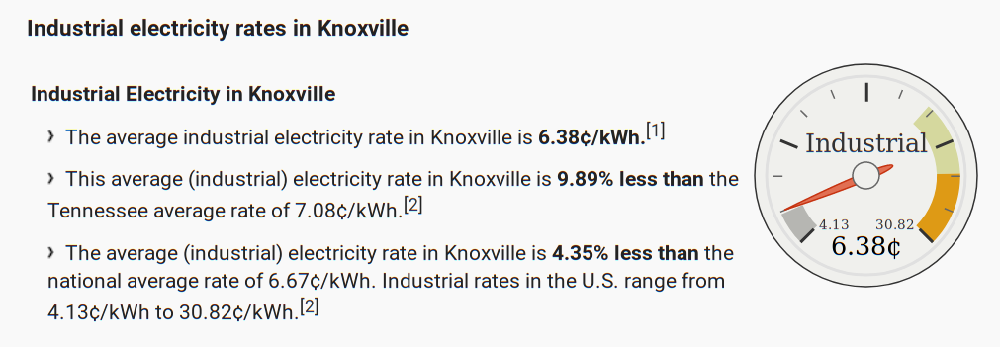

Coprocessor architectures

- CUDA devices (NVIDIA)
- Programmable via CUDA, OpenACC, OpenMP-5, OpenCL, HIP->CUDA, SYCL->CUDA
- Example machine: OLCF Summit (details from user guide)
- ROCm devices (AMD)
- Programmable via HIP, OpenMP-5, OpenCL, SYCL->HIP
- Example machine: OLCF Frontier
- Intel X GPUs
- Programmable via SYCL, OpenMP-5, OpenCL?
- Example machine: ALCF Aurora/A21
- Upcoming non-coprocessor Supercomputers
Fundamental capabilities
from io import StringIO
import pandas
import numpy as np
import matplotlib.pyplot as plt
plt.style.use('ggplot')
data = StringIO("""
package,cores,lanes/core,clock (MHz),peak (GF),bandwidth (GB/s),TDP (W),MSRP
Xeon 8280,28,8,2700,2400,141,205,10000
NVIDIA V100,80,64,1455,7800,900,300,10664
AMD MI60,64,64,1800,7362,1024,300,
AMD Rome,64,4,2000,2048,205,200,6450
""")
df = pandas.read_csv(data, index_col='package')
df
| cores | lanes/core | clock (MHz) | peak (GF) | bandwidth (GB/s) | TDP (W) | MSRP | |
|---|---|---|---|---|---|---|---|
| package | |||||||
| Xeon 8280 | 28 | 8 | 2700 | 2400 | 141 | 205 | 10000.0 |
| NVIDIA V100 | 80 | 64 | 1455 | 7800 | 900 | 300 | 10664.0 |
| AMD MI60 | 64 | 64 | 1800 | 7362 | 1024 | 300 | NaN |
| AMD Rome | 64 | 4 | 2000 | 2048 | 205 | 200 | 6450.0 |
Amdahl's Law for energy efficiency
df['efficiency (GF/W)'] = df['peak (GF)'] / df['TDP (W)']
df['efficiency (GF/W)']
package
Xeon 8280 11.707317
NVIDIA V100 26.000000
AMD MI60 24.540000
AMD Rome 10.240000
Name: efficiency (GF/W), dtype: float64
ngpu = np.arange(0, 9)
overhead = 100 # Power supply, DRAM, disk, etc.
peak = (ngpu == 0)*df.loc['Xeon 8280']['peak (GF)'] + ngpu*df.loc['NVIDIA V100']['peak (GF)']
tdp = overhead + df.loc['Xeon 8280']['TDP (W)'] + ngpu*df.loc['NVIDIA V100']['TDP (W)']
plt.plot(ngpu, peak / tdp)
plt.xlabel('number of GPUs per CPU')
plt.title('DP Peak efficiency (GF/W)');
Compare to Green 500 list
- #1 system is 15.1 GF/W (2x Xeon E5-2698v4, 8x V100)
- #2 system (Summit) is 14.7 GF/W (2x Power9, 6x V100)
- #27 system is 5.8 GF/W on Xeon 6248 (no GPU)
Amdahl for cost efficiency
df['cost (GF/$)'] = df['peak (GF)'] / df['MSRP']
df['cost (GF/$)']
package
Xeon 8280 0.240000
NVIDIA V100 0.731433
AMD MI60 NaN
AMD Rome 0.317519
Name: cost (GF/$), dtype: float64
overhead = 3000 + 2000*ngpu # power supply, memory, cooling, maintenance
cost = overhead + df.loc['Xeon 8280']['MSRP'] + ngpu*df.loc['NVIDIA V100']['MSRP']
plt.plot(ngpu, peak / cost)
plt.xlabel('number of GPUs per CPU')
plt.title('DP cost efficiency (GF/$)');
What fraction of datacenter cost goes to the power bill?
- OLCF Summit is reportedly a \$200M machine.
- What if we just buy the GPUs at retail?
- 256 racks
- 18 nodes per rack
- 6 GPUs per node
- V100 MSRP of about $10k
256 * 18 * 6 * 10e3 / 1e6 # millions
276.48
- Rule of thumb: $ \lesssim \$1M $ per MW-year
- We know Summit is a 13 MW facility
- Check industrial electricity rates

.0638 * 24 * 365
558.8879999999999
Programming models
#pragma acc data copy(A) create(Anew)
while ( error > tol && iter < iter_max ) {
error = 0.0;
#pragma acc kernels {
#pragma acc loop independent collapse(2)
for ( int j = 1; j < n-1; j++ ) {
for ( int i = 1; i < m-1; i++ ) {
Anew [j] [i] = 0.25 * ( A [j] [i+1] + A [j] [i-1] +
A [j-1] [i] + A [j+1] [i]);
error = max ( error, fabs (Anew [j] [i] - A [j] [i]));
}
}
}
}
Comparison slides: Is OpenMP 4.5 Target Off-load Ready for Real Life? A Case Study of Three Benchmark Kernels (2018)